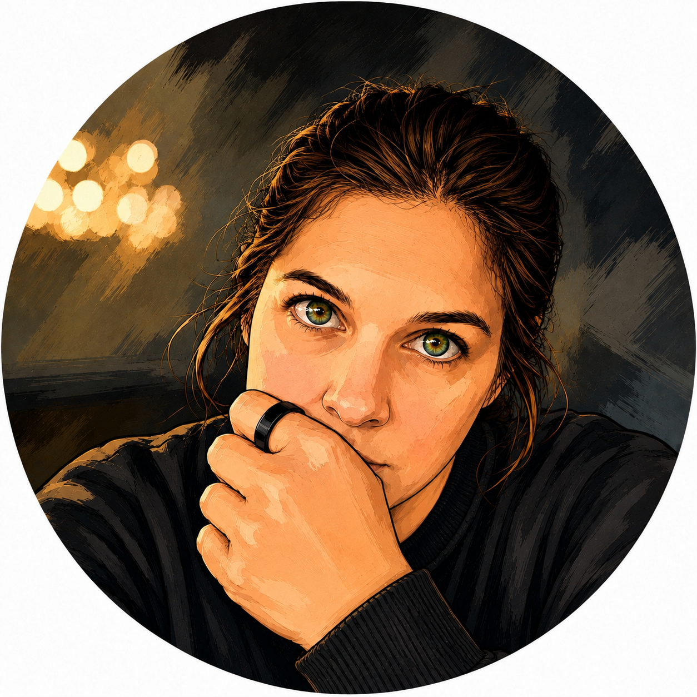

Professional focus
I investigate threats and vulnerabilities, connect signals across endpoint and network data, and translate complex findings into clear guidance for analysts, technical teams, and leadership.
Analyst
Threat intelligence, incident response, threat hunting, and security operations.

Narrator
Short-form narration delivered with warmth, clarity, curiosity, and character.
Cybersecurity portfolio
Cybersecurity Analyst III with experience across threat intelligence, SOC operations, incident response, vulnerability research, threat hunting, security automation, and executive reporting.
I investigate threats and vulnerabilities, connect signals across endpoint and network data, and translate complex findings into clear guidance for analysts, technical teams, and leadership.
Researches vulnerabilities, threat actors, campaigns, and incidents affecting Texas government and public-sector organizations; supports high-priority investigations and produces actionable intelligence reporting.
Investigated security alerts, enriched forensic findings, supported CMMC readiness, and managed high-volume Fidelis and ServiceDesk queues.
Led SOC alert triage and incident response across Microsoft Sentinel and Defender for Endpoint, built automation workflows, and developed a security knowledge base.
Voice & audio
I’m Danielle, and I’ve always lived somewhere between instinct and analysis. I’m the person who wants to understand how something works, why it broke, and what the details are trying to tell us—but I’m just as interested in the people behind those details.
Cybersecurity gives my logical side a place to dig, connect patterns, and turn complexity into something useful. Voice work gives my warmer side room to breathe—to tell a story, find the feeling beneath the words, and make a real connection with whoever is listening. Those sides of me may seem at odds, but they come from the same place: curiosity, empathy, and a need to make things clearer and more human.
“Whether I’m following a signal or telling a story, I’m always listening for what matters.”
A short personal narrative—conversational, candid, and unmistakably Danielle.